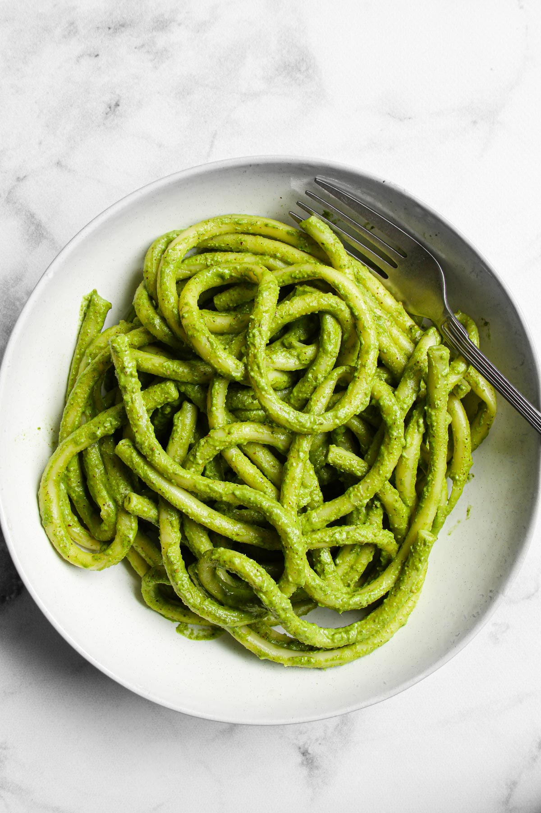

Spinach-Basic Pesto Pasta

Description
This mild spinach-basil pesto tastes fresh, herbal, and nutty. It is super easy to make in a food processor or
blender. Toss it with any kind of pasta and enjoy! This pesto also tastes delicious in sandwiches (mix with some
mayo or cream cheese), on pizza (add a drizzle of olive oil), as a dip (mix with some sour cream), and as
addition to salad vinaigrettes
Ingredients
- 8 oz (225 g) maccheroncini or any other pasta
- 1 packed cup (40 g) baby spinach leaves
- ¼ packed cup (10 g) fresh basil leaves
- 3-4 tablespoons olive oil
- ¼ cup (25 g) walnuts, roughly chopped and toasted (raw are fine too, see note)
- ¼ cup (20 g) grated Parmesan cheese, plus more for serving
- ¼ teaspoon fine salt
- 1 organic lemon, optional
Steps
- Bring salted water to a boil, add pasta, and cook according to the package instructions, 8-10 minutes.
- While the pasta is cooking, combine spinach, basil, olive oil, walnuts, Parmesan, and salt in a food
processor or blender. Blend until the mixture is well blended, pausing to scrape down the sides as
necessary. If you prefer a chunkier pesto, stop processing while it still has some texture.
- Taste, and adjust salt if necessary. If you feel it lacks zing, add a squeeze of lemon juice or some grated
lemon zest.
- Drain pasta, but reserve some of the pasta water. Toss pasta with the pesto and add some of the pasta water,
if needed. Serve with grated Parmesan cheese.
Notes
Walnuts:While using raw walnuts is totally fine, toasting them for 10 minutes in a 350°F
preheated oven takes the pesto to the next level.
Storage: Store leftover pesto, if there is any, in a covered container in the refrigerator for
several days. To prevent the pesto from changing color during storage due to oxidation, place the pesto in a
container, flatten its surface, and pour a thin layer of oil over the top of the pesto. Cover with a lid. It
also freezes well.
Return Home
Top